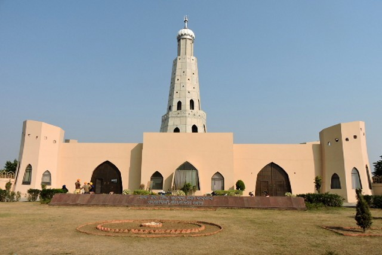

Baba Banda Singh Bahadur War Memorial

I.S Bindra Stadium

Siswan Dam

Gurdwara Amb Sahib
Mohali (officially known as Sahibzada Ajit Singh Nagar, or SAS Nagar) is named after the eldest son of Guru Gobind Singh Ji. Situated adjacent to Chandigarh, Mohali has transformed into Punjab’s premier technology and sports capital. It is world-renowned for the PCA I.S. Bindra Stadium, the monumental Fateh Burj (Tower of Victory) at Chappar Chiri commemorating Baba Banda Singh Bahadur's historic triumph, sacred shrines like Gurdwara Amb Sahib, and scenic eco-tourism gateways like Siswan Dam.
Baba Banda Singh Bahadur War Memorial
I.S Bindra Stadium
Siswan Dam
Gurdwara Amb Sahib
From towering victory minars and international cricket floodlights to Shivalik hill reservoirs, experience Mohali from unique vantage points.

IT City Skyline PanoramaModern highway angle capturing Mohali's rapid growth as northern India's tech hub.
Stadium Floodlight Angle
Spectacular angle showcasing the iconic low-height floodlight pillars and emerald outfield.
Tower of Victory Angle
Upward heroic angle of India's tallest memorial victory minar standing over 328 feet high.
Reservoir Nature Perspective
Serene angle framing the calm water reservoir where the plains meet the Shivalik hill range.
Read experiences from travelers who visited Mohali or share your own personal tips and reviews.
Have recommendations for sports, cafes, or sights in Mohali? Share them below!


© 2026 Punjab Tourism. All rights reserved.